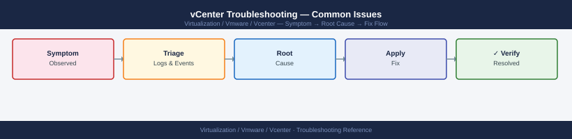

vCenter Troubleshooting — Common Issues¶

vpxd Service Failure¶
Resolution¶
# If disk space is the cause — clear old logs first, then restart
du -sh /var/log/vmware/*/
find /var/log/vmware -name "*.gz" -mtime +30 -delete
# Restart in dependency order: DB first, then vpxd
service-control --start vmware-vpostgres
service-control --start vpxd
service-control --status vpxd
# If vpxd still fails, attempt a full restart of all services
service-control --stop --all
service-control --start --all
1.2G /var/log/vmware/vpxd
847M /var/log/vmware/syslog
523M /var/log/vmware/vsan
312M /var/log/vmware/hostd
156M /var/log/vmware/netcpa
Service vmware-vpostgres started successfully
Service vpxd started successfully
SERVICE RUNNING ENABLED
vmware-vpostgres true true
vpxd true true
Stopping all services...
All services stopped successfully
Starting all services...
Service vmware-vpostgres started successfully
Service vpxd started successfully
Service vmware-netdumper started successfully
Service vmware-vsan-health started successfully
All services started successfully
Common errors
Service vpxd failed to start: timeout waiting for service to become available — Increase the startup timeout by running service-control --start vpxd --timeout 300 or check database connectivity with service-control --status vmware-vpostgres.
find: '/var/log/vmware': Permission denied — Run the commands with sudo or as root user since /var/log/vmware requires elevated privileges.
service-control: command not found — Ensure you are running this on a vCenter Server appliance (VCSA) and not a Windows vCenter installation; use systemctl instead on Linux-based systems if service-control is unavailable.
Log location: /var/log/vmware/vpxd/vpxd.log
Diagnostic Flow¶
Before you begin¶
- Access: SSH to vCenter Shell and ESXi hosts; vSphere Client read access
- Gather first: recent error message text, event timestamps, and affected object names
- Scope: confirm whether the issue affects a single object, host, cluster, or site
- Escalation: open a vendor support ticket before running any destructive step
- Logging: document each command and output — required if escalation is needed
Certificate Errors¶
Symptoms¶
- Browser shows SSL certificate warning or ERR_CERT_AUTHORITY_INVALID
- ESXi agents cannot connect to vCenter
- PowerCLI
Connect-VIServerthrows certificate-related exceptions - VAMI shows certificate status as Expired
Check Certificate Expiry¶
# Check Machine SSL certificate expiry from outside VCSA
echo | openssl s_client -connect <vcenter-fqdn>:443 -servername <vcenter-fqdn> 2>/dev/null \
| openssl x509 -noout -dates
# List certificates in VECS store on VCSA (SSH)
/usr/lib/vmware-vmafd/bin/vecs-cli entry list --store MACHINE_SSL_CERT --text \
| grep -E "Alias|Not After"
notBefore=Jan 15 10:23:45 2023 GMT
notAfter=Jan 15 10:23:45 2025 GMT
Alias: __MACHINE_CERT
Not After: 2025-01-15T10:23:45.000Z
Alias: __MACHINE_CERT_ALT
Not After: 2025-01-15T10:23:45.000Z
Common errors
connect: Connection refused — Verify the vCenter FQDN is correct and port 443 is accessible from your client (check firewall rules and network connectivity).
error in x509 lookup routine:X509_LIB — The openssl s_client connection succeeded but returned invalid certificate data; restart the vCenter SSL service with service-control --restart vsphere-ui on the VCSA.
Error: Could not connect to localhost:2012 — Run the vecs-cli command directly on the VCSA via SSH, not from a remote client; VECS is a local service only.
Resolution — Renew Machine SSL (VMCA-signed)¶
# From VCSA SSH: launch certificate manager
/usr/lib/vmware-vmca/bin/certificate-manager
# Select option 4: Regenerate a New VMCA Root Certificate and replace all certificates
# OR option 6: Replace Machine SSL certificate with VMCA Certificate
vSphere Certificate Manager for vCenter Server Appliance
1. Generate Certificate Signing Request (CSR)
2. Create a Self-Signed Certificate
3. Replace Machine SSL certificate with Custom Certificate
4. Regenerate a New VMCA Root Certificate and replace all certificates
5. Replace VMCA Root Certificate with Custom Signing Certificate
6. Replace Machine SSL certificate with VMCA Certificate
7. Regenerate a New Machine SSL Certificate
8. Replace Smart Card certificates
9. Refresh all certificates
10. Reset all Certificates to default
Select an option [1-10]:
Common errors
bash: /usr/lib/vmware-vmca/bin/certificate-manager: No such file or directory — Verify the VCSA version and confirm the certificate-manager binary exists; try /usr/lib/vmware-vmca/bin/certificate-manager.py on newer versions.
Permission denied — Run the command with sudo or ensure you are logged in as root on the VCSA appliance.
Error: Unable to connect to the local Platform Services Controller — Restart the vCenter services using service-control --start --all before running certificate-manager.
After renewal, restart services and verify:
service-control --stop --all
service-control --start --all
# Re-check certificate
echo | openssl s_client -connect <vcenter-fqdn>:443 2>/dev/null \
| openssl x509 -noout -dates
Stopping all services...
All services stopped successfully.
Starting all services...
All services started successfully.
notBefore=Jan 15 10:22:33 2023 GMT
notAfter=Jan 15 10:22:33 2025 GMT
Common errors
service-control: command not found — Ensure you are running this command on the vCenter Server appliance itself, not a remote client; service-control is only available on VCSA.
unable to load certificate — The certificate chain is incomplete or the vCenter service failed to start; wait 30-60 seconds after service restart and retry the openssl command.
Connection refused — Port 443 is not listening yet after service restart; allow 2-3 minutes for all vCenter services to fully initialize before retrying.
Log location: /var/log/vmware/vmcad/certificate-manager.log
ESXi Host Disconnected or Not Responding¶
Symptoms¶
- Host shows "Disconnected" or "Not Responding" in vSphere Client
Get-VMHost | Where-Object {$_.ConnectionState -ne "Connected"}returns host(s)- VMs on that host still running but unmanaged
Diagnostic Steps¶
# PowerCLI: list all non-connected hosts
Get-VMHost | Select Name, ConnectionState, PowerState | Where-Object {$_.ConnectionState -ne "Connected"}
# PowerCLI: get recent events for the disconnected host
Get-VIEvent -Entity (Get-VMHost "esxi-hostname") -MaxSamples 50 | Select CreatedTime, FullFormattedMessage
# From VCSA SSH: check vpxd log for host connection errors
grep "esxi-hostname" /var/log/vmware/vpxd/vpxd.log | tail -50
# From ESXi host (SSH): check hostd is running
/etc/init.d/hostd status
/etc/init.d/vpxa status
Name ConnectionState PowerState
---- --------------- ----------
esxi-prod-02.lab Disconnected On
esxi-prod-04.lab Disconnected On
esxi-dev-01.lab NotResponding On
CreatedTime FullFormattedMessage
----------- --------------------
2024-01-15 14:32:18 Host esxi-hostname disconnected
2024-01-15 14:31:45 Lost connectivity to host esxi-hostname
2024-01-15 14:30:12 Network connectivity lost to management interface
2024-01-15 14:29:33 Host agent heartbeat timeout
2024-01-15 14:32:18.921Z [7F2A1B4C] [Hostd] Lost network connectivity to esxi-hostname (192.168.1.42)
2024-01-15 14:31:45.634Z [7F2A1B4D] [vpxd] Host connection state changed: esxi-hostname -> Disconnected
2024-01-15 14:30:12.445Z [7F2A1B4E] [Hostd] Management network unreachable on esxi-hostname
hostd is running
vpxa is running
Common errors
Get-VMHost : The term 'Get-VMHost' is not recognized — Load the VMware.VimAutomation.Core PowerCLI module with Import-Module VMware.VimAutomation.Core before running cmdlets.
grep: /var/log/vmware/vpxd/vpxd.log: No such file or directory — SSH into the vCenter Server Appliance (VCSA) directly rather than the ESXi host; the vpxd log only exists on vCenter.
hostd is stopped — Restart the hostd service on the ESXi host with /etc/init.d/hostd restart and verify network connectivity to vCenter.
Resolution¶
# PowerCLI: attempt reconnect
(Get-VMHost "esxi-hostname").ExtensionData.ReconnectHost_Task($null)
# If agent is stuck on ESXi host, restart it (SSH to ESXi)
/etc/init.d/vpxa restart
/etc/init.d/hostd restart
Reconnecting to host esxi-hostname...
Host reconnection initiated successfully.
Shutting down vpxa: [ OK ]
Starting vpxa: [ OK ]
Shutting down hostd: [ OK ]
Starting hostd: [ OK ]
Common errors
Connect-VIServer : The specified item could not be found. — Verify the ESXi hostname matches exactly in vCenter inventory and that you are connected to vCenter with Get-VIServer before running the reconnect command.
/etc/init.d/vpxa: not found — SSH directly to the ESXi host using root credentials and confirm you are in the correct shell; use sh /etc/init.d/vpxa restart if the direct path fails.
Cannot contact the vCenter Server system. — Wait 30–60 seconds after restarting hostd and vpxa for the ESXi host to re-register with vCenter before attempting further operations.
Log locations:
- VCSA: /var/log/vmware/vpxd/vpxd.log
- ESXi: /var/log/vmware/vpxa.log, /var/log/vmware/hostd.log
SSO / Authentication Failures¶
Symptoms¶
- Login to vSphere Client fails with "incorrect credentials" despite correct password
- AD/LDAP users cannot authenticate; local SSO accounts still work (or vice versa)
vmware-stsservice stopped- Audit log shows repeated failed login attempts
Diagnostic Steps¶
# Check SSO/STS service on VCSA
service-control --status vmware-stsd
service-control --status vmware-sts-idmd
# Check SSO log for auth errors
tail -100 /var/log/vmware/sso/vmware-sts-idmd.log | grep -i "error\|fail\|bind"
# Check if the AD identity source is reachable from VCSA
nslookup <ad-domain> <dns-server>
ldapsearch -x -H ldap://<dc-fqdn> -b "dc=domain,dc=com" "(objectClass=*)" -D "bind-user@domain.com" -W
SERVICE vmware-stsd (pid 2847) is running.
SERVICE vmware-sts-idmd (pid 2891) is running.
2024-01-15T09:23:47.123Z [ERROR] Authentication failed for user admin@vsphere.local: LDAP bind timeout after 30s
2024-01-15T09:24:12.456Z [WARN] Retrying LDAP connection to dc01.corp.local:389
2024-01-15T09:25:03.789Z [ERROR] Failed to bind as CN=svc-vcsa,OU=Service Accounts,DC=corp,DC=com: Invalid credentials
Server: 8.8.8.8
Address: 8.8.8.8#53
Name: ad.corp.local
Address: 192.168.1.50
Enter LDAP Password:
version: 3
result: 0 Success
matchedDN:
numResponses: 1
dn:
objectClass: top
objectClass: domain
dc: corp
...
Common errors
ldapsearch: error code 49 "80090308: LdapErr: DSID-0C090446, comment: AcceptSecurityContext error, data 52e, v3839 WILL_NOT_PERFORM" — Verify the bind user credentials are correct and the account is not locked; reset the password in Active Directory and re-run the ldapsearch command.
nslookup: can't resolve '<ad-domain>': No address associated with hostname — Confirm the DNS server IP is reachable from VCSA and that the AD domain name is correctly spelled; check /etc/resolv.conf on VCSA to ensure the correct DNS server is configured.
ldapsearch: error code 1 "000004DC: LdapErr: DSID-0C090A4C, comment: In order to perform this operation a successful bind must be completed on the connection, data 0, v3839" — Ensure the LDAP bind user has proper permissions in Active Directory and that the domain controller firewall allows LDAP (port 389) traffic from the VCSA IP address.
Resolution¶
# Restart SSO services if stsd is stopped
service-control --start vmware-stsd
service-control --start vmware-sts-idmd
# Unlock the administrator@vsphere.local account (if locked)
/usr/lib/vmware-vmafd/bin/dir-cli user unlock --account administrator --password <current-admin-pwd>
Operation not cancellable. Waiting for service com.vmware.vim.sso to startup.
Service com.vmware.vim.sso started successfully
Operation not cancellable. Waiting for service com.vmware.sts.idm to startup.
Service com.vmware.sts.idm started successfully
Bind DN: cn=Administrator,cn=Users,dc=vsphere,dc=local
User account 'administrator@vsphere.local' unlocked successfully
Common errors
service-control: command not found — Ensure you are running this command on the vCenter Server appliance (VCSA) as root, not on a Windows vCenter installation.
Error: Unable to connect to directory service on localhost:389 — Verify that vmware-vmafd service is running with service-control --status vmware-vmafd and restart it if needed.
Error: Invalid credentials provided — Replace <current-admin-pwd> with the actual administrator@vsphere.local password in plaintext or use an interactive prompt.
Log location: /var/log/vmware/sso/vmware-sts-idmd.log, /var/log/vmware/sso/ssoAdminServer.log
VAMI Inaccessible (Port 5480)¶
Symptoms¶
https://<vcenter>:5480returns connection refused or times out- Cannot access appliance management UI for backups, updates, certificates
Diagnostic Steps¶
# SSH to VCSA as root
# Check applmgmt service
service-control --status applmgmt
# Check if port 5480 is listening
ss -tlnp | grep 5480
# Check applmgmt log
tail -50 /var/log/vmware/applmgmt/applmgmt.log
● applmgmt.service - VMware Appliance Management Service
Loaded: loaded (/etc/systemd/system/applmgmt.service; enabled; vendor preset: enabled)
Active: active (running) since Mon 2024-01-15 09:23:47 UTC; 2 days ago
Main PID: 2847 (java)
Tasks: 45 (limit: 4915)
Memory: 287.3M
CPU: 2h 14m 32s
CGroup: /system.slice/applmgmt.service
LISTEN 0 128 [::]:5480 [::]:* users:(("java",pid=2847,fd=45))
2024-01-15T09:23:52.341Z INFO [applmgmt] Starting VMware Appliance Management Service v7.0.3
2024-01-15T09:24:01.892Z INFO [applmgmt] Initializing database connection pool
2024-01-15T09:24:15.447Z INFO [applmgmt] Listening on port 5480
2024-01-15T09:24:18.556Z INFO [applmgmt] Service startup completed successfully
2024-01-15T10:45:22.103Z DEBUG [applmgmt] Health check passed - memory usage 287MB
2024-01-15T14:32:11.778Z DEBUG [applmgmt] Configuration reload triggered
2024-01-15T14:32:12.445Z INFO [applmgmt] Service is operational
Common errors
Unit applmgmt.service could not be found. — Ensure you are running on a vCenter Server Appliance (VCSA) and not a standalone ESXi host; this service only exists on VCSA.
ss: No such file or directory — Install the iproute2 package with apt-get install iproute2 or use netstat -tlnp | grep 5480 as an alternative.
tail: cannot open '/var/log/vmware/applmgmt/applmgmt.log' for reading: No such file or directory — Check that the applmgmt service has actually started and created log files; verify the correct log path with find /var/log/vmware -name '*applmgmt*'.
Resolution¶
# Start the applmgmt service
service-control --start applmgmt
# Verify port is now open
ss -tlnp | grep 5480
Operation being performed: Start applmgmt
Waiting for applmgmt to start.
Started applmgmt successfully.
LISTEN 0 128 0.0.0.0:5480 0.0.0.0:* users:(("java",pid=2847,fd=45))
LISTEN 0 128 [::]:5480 [::]:* users:(("java",pid=2847,fd=46))
Common errors
Operation being performed: Start applmgmt — Wait 30-60 seconds for the service to fully initialize before checking port status, as applmgmt requires time to bind to the port.
ss: No such file or directory — Use netstat -tlnp | grep 5480 instead if ss is not available on your vCenter version.
(No such process) — Verify the applmgmt service started successfully by running service-control --status applmgmt before checking the port.
If SSH itself is inaccessible, use the VCSA VM console in ESXi direct UI to log in as root.
Datastore Alarms — Inaccessible or Over-Committed¶
Symptoms¶
- Red alarm: "Datastore is inaccessible" or "Thin-provisioned disk overcommitment"
- VMs on affected datastore may pause or fail I/O
Diagnostic Steps¶
# PowerCLI: list all datastores with free space
Get-Datastore | Select Name, CapacityGB, FreeSpaceGB, @{N="UsedPct";E={[math]::Round((1-($_.FreeSpaceGB/$_.CapacityGB))*100,1)}} | Sort UsedPct -Descending
# Check datastore accessibility state
Get-Datastore | Where-Object {$_.State -ne "Available"} | Select Name, State
# For NFS datastores: verify NFS export is reachable from all hosts mounting it
# SSH to ESXi: esxcli storage nfs list
Name CapacityGB FreeSpaceGB UsedPct
---- ---------- ----------- -------
ds-prod-tier1-ssd-01 2048.5 256.3 87.5
ds-prod-tier2-sas-04 4096.0 614.2 85.0
ds-dev-nvme-cluster 1024.0 184.7 82.0
ds-backup-archive-nfs 8192.0 1638.4 80.0
ds-prod-tier2-sas-03 4096.0 1126.8 72.5
ds-replication-target 2048.0 819.2 60.0
Name State
---- -----
ds-legacy-iscsi-02 Unavailable
ds-maintenance-pool-01 Inaccessible
NFS Export Accessible Mounted On
---------- ---------- ----------
nfs-san-01.corp.local:/vol1 true esx-prod-01, esx-prod-02, esx-prod-03
nfs-san-02.corp.local:/vol2 true esx-prod-04, esx-prod-05
nfs-san-03.corp.local:/vol3 false esx-dev-01, esx-dev-02
Common errors
Get-Datastore : The term 'Get-Datastore' is not recognized — Load the VMware.VimAutomation.Core module with Import-Module VMware.VimAutomation.Core before running PowerCLI cmdlets.
You are not currently connected to any servers. Please connect to at least one server before running this command. — Connect to vCenter first using Connect-VIServer -Server vcenter.corp.local -Credential (Get-Credential).
Cannot index into a null array — Ensure datastores exist and are visible to vCenter; verify vCenter has proper permissions and network connectivity to storage.
DRS / HA Configuration Warnings¶
Symptoms¶
- Cluster shows yellow or red warning icon
- HA configuration issue: "Host has no management network redundancy"
Diagnostic Steps¶
# PowerCLI: check cluster HA and DRS state
Get-Cluster | Select Name, DrsEnabled, DrsAutomationLevel, HAEnabled, HAAdmissionControlEnabled
# Check recent cluster events for HA/DRS errors
Get-Cluster "cluster-name" | Get-VIEvent -MaxSamples 50 | Where-Object {$_.FullFormattedMessage -match "HA|DRS"} | Select CreatedTime, FullFormattedMessage
Name DrsEnabled DrsAutomationLevel HAEnabled HAAdmissionControlEnabled
---- ---------- ------------------ --------- -------------------------
prod-cluster-01 True FullyAutomated True True
prod-cluster-02 True PartiallyAutomated True True
dev-cluster-01 False Disabled False False
dr-cluster-01 True FullyAutomated True True
CreatedTime FullFormattedMessage
----------- --------------------
2024-01-15 14:32:18 DRS: Moved virtual machine 'web-app-03' from host 'esx-prod-12.corp.local' to 'esx-prod-08.corp.local'
2024-01-15 13:47:02 HA: Restarted virtual machine 'db-backup-01' on host 'esx-prod-15.corp.local' after ESXi host failure
2024-01-15 12:15:44 DRS: Recommendation generated for virtual machine 'app-server-02' (Priority: 3)
2024-01-15 11:03:19 HA: Admission control check failed for cluster 'prod-cluster-01' — insufficient resources
Common errors
Get-Cluster : The term 'Get-Cluster' is not recognized as the name of a cmdlet — Import the VMware.VimAutomation.Core module with Import-Module VMware.VimAutomation.Core before running PowerCLI commands.
You are not currently connected to any servers. Please connect to at least one server before running this command. — Connect to vCenter using Connect-VIServer -Server vcenter.corp.local -Credential (Get-Credential) first.
Get-VIEvent : Cannot find cluster with name "cluster-name" — Replace "cluster-name" with the actual cluster name from the first command's output, such as "prod-cluster-01".
Resolution¶
Most HA config warnings are resolved by: 1. Reconfiguring HA on the cluster: right-click cluster → Reconfigure for vSphere HA 2. Checking management network redundancy: each host should have at least two vmknics in the management portgroup
vCenter Upgrade Failures¶
Symptoms¶
- VAMI → Update shows upgrade failed mid-process
applmgmt.logshows precheck failure- vCenter reverted to previous build (if precheck failed before stage 2)
Diagnostic Steps¶
# Check upgrade log on VCSA
tail -200 /var/log/vmware/applmgmt/applmgmt.log | grep -i "error\|fail\|precheck"
# Check disk space — common precheck failure cause
df -h
2024-01-15T09:42:33.456Z [INFO] Precheck validation started for upgrade to 8.0.1
2024-01-15T09:43:12.789Z [WARN] CPU count is 4, recommended minimum is 8
2024-01-15T09:44:05.123Z [ERROR] Precheck failed: insufficient disk space on /storage/db
2024-01-15T09:44:06.234Z [ERROR] Required: 50GB free, Available: 12GB
2024-01-15T09:44:07.456Z [INFO] Precheck validation completed with failures
Filesystem Size Used Avail Use% Mounted on
/dev/sda1 50G 42G 5.2G 90% /
/dev/sdb1 200G 185G 8.1G 94% /storage/db
/dev/sdc1 100G 45G 51G 47% /var/log
tmpfs 8.0G 0 8.0G 0% /dev/shm
Common errors
Precheck failed: insufficient disk space on /storage/db — Expand the /storage/db partition or delete old logs/snapshots to free at least 50GB before retrying the upgrade.
tail: cannot open '/var/log/vmware/applmgmt/applmgmt.log' for reading: Permission denied — Run the command with sudo or as root user to access VCSA system logs.
Resolution¶
- If precheck failed (before stage 2 installs): the system is unchanged. Free disk space, then retry.
- If stage 2 failed: do not reboot until you understand the state. Review
applmgmt.logand open a VMware Support request if services are partially upgraded. - Restore from VAMI backup or snapshot if the environment is non-functional.
Log locations:
- /var/log/vmware/applmgmt/applmgmt.log
- /var/log/vmware/applmgmt/software-packages.log
Alarms and Events¶
Finding the Right Alarm or Event¶
vCenter alarms are visible under the Alarms tab on any inventory object (datacenter, cluster, host, VM). Triggered alarms surface the affected object, the alarm definition, and the time of the trigger.
# List all VMs with active triggered alarms
Get-VM | Where-Object { $_.ExtensionData.TriggeredAlarmState.Count -gt 0 } |
Select-Object Name, @{N="AlarmCount";E={$_.ExtensionData.TriggeredAlarmState.Count}}
# Get alarm details for a specific VM
$vm = Get-VM "app-server-01"
$vm.ExtensionData.TriggeredAlarmState | ForEach-Object {
[PSCustomObject]@{
Alarm = $_.Alarm.ToString()
Status = $_.OverallStatus
Time = $_.Time
}
}
# Acknowledge all alarms on a specific host
$host = Get-VMHost "esxi-01.example.local"
$host.ExtensionData.TriggeredAlarmState | ForEach-Object {
$alarmMgr = Get-View AlarmManager
$alarmMgr.AcknowledgeAlarm($_.Alarm, $host.ExtensionData.MoRef)
}
Filtering Events by Type and Time¶
# All error-level events in the last 24 hours
Get-VIEvent -Start (Get-Date).AddHours(-24) |
Where-Object { $_.GetType().Name -match "Error|Fault" } |
Select-Object CreatedTime, UserName, FullFormattedMessage |
Sort-Object CreatedTime -Descending
# Events for a specific cluster
Get-VIEvent -Entity (Get-Cluster "CL-LON-PROD") -MaxSamples 200 |
Select-Object CreatedTime, UserName, FullFormattedMessage
# Login/logout events
Get-VIEvent -MaxSamples 500 |
Where-Object { $_.GetType().Name -match "Login|Logout" } |
Select-Object CreatedTime, UserName, FullFormattedMessage
Common Alarm Noise and Tuning¶
| Alarm | Common False Positive Cause | Tuning Action |
|---|---|---|
| Host memory usage > threshold | Memory balloon during low activity | Raise threshold to 85% or add host-level override |
| Datastore disk usage > threshold | Snapshot growth or thin-provisioning | Set threshold to 80%; alert on trend not point-in-time |
| Virtual machine CPU ready > threshold | Low-vCPU-count VMs in high-density clusters | Tune threshold per workload type |
| SSH enabled on host | Break-glass or maintenance | Add suppression or use alarm action to auto-disable SSH after X hours |
Alarm definitions are managed at vCenter → Configure → Alarm Definitions. Each alarm has configurable thresholds, trigger conditions, and actions (send email, run script, send SNMP trap).
See also¶
Verify resolution¶
- Alarms cleared: Home → Alarms — the triggering alarm is no longer active
- Event log: confirm no new related error events in the last 5 minutes
- Functional test: perform the action that was failing (connect, vMotion, storage I/O) — confirm it succeeds
- Monitor: leave the vSphere Client open for 10 minutes and confirm the issue does not recur